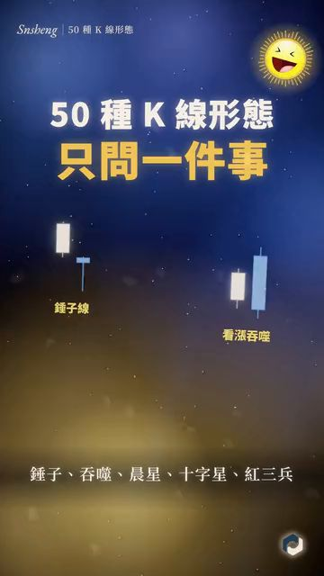

學習路徑 ・ 第一段 先會看 K 線
50 種 K 線形態，只問一件事

30 秒看重點
- 每一個形態只問一件事：前一根的高點和低點，破了沒？
- 突破前一根的高點，多方贏；跌破前一根的低點，空方贏；兩邊都沒破，就是平衡，等下一根。
- 兩邊都破，看後面破的是哪一邊。影線碰到就算。
- K 線形態只告訴你這一根是誰贏，要不要進場，還要看結構和趨勢。
影片在講什麼
點時間，影片會從那一段開始播。
50 種形態，怎麼分？
錘子、吞噬、晨星、十字星、紅三兵，K 線形態一數就是 50 種。不用背，每一個形態只問一件事：前一根的高點和低點，破了沒？
三個箱子
突破前一根的高點，多方贏。跌破前一根的低點，空方贏。兩邊都沒破，就是平衡，等下一根。兩邊都破，看後面破的是哪一邊。大陽線、紅三兵、晨星進多方；大陰線、三隻烏鴉、黃昏之星進空方；孕線、十字星進平衡。
考三題
先跌破前一根的低點、再突破前一根的高點，後面破的是高點，多方贏。錘子線書上說會漲，可是它跌破了前一根的低點、高點沒破，是空方贏，要等下一根突破錘子的高點，才輪到多方。最後一個形態沒有名字，高點低點都沒破，就是平衡。
看完形態，再看什麼
K 線形態只告訴你這一根是誰贏。要不要進場，還要看結構和趨勢，之後的影片會講。
常見問題
影線碰到前一根的高點，算突破嗎？
算。突破和跌破一樣，影線碰到就算。
一根 K 同時破了前一根的高點和低點，算誰贏？
看後面破的是哪一邊。先跌破低點、後突破高點，多方贏。